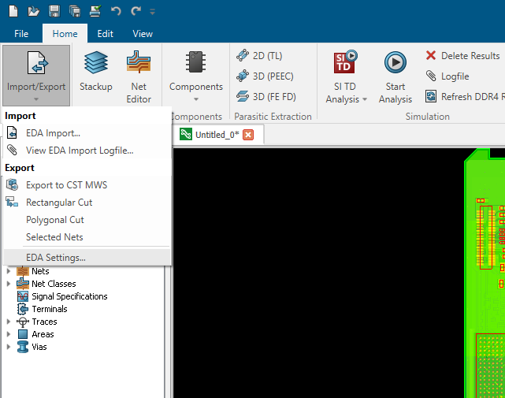
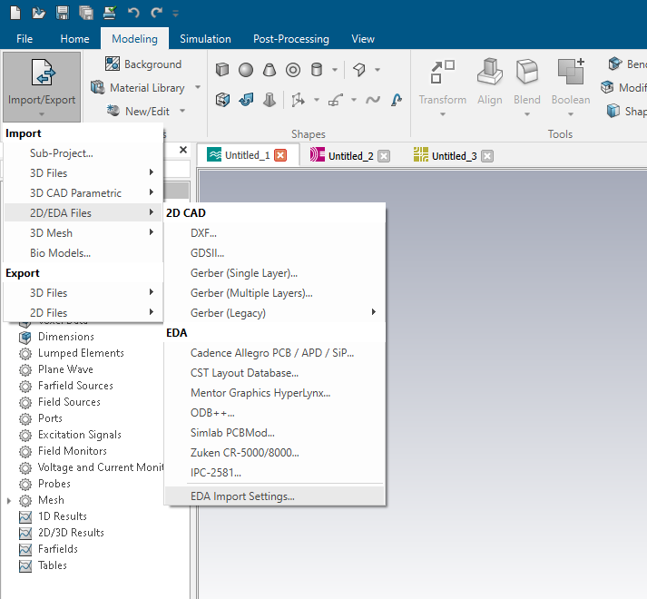
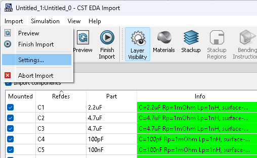
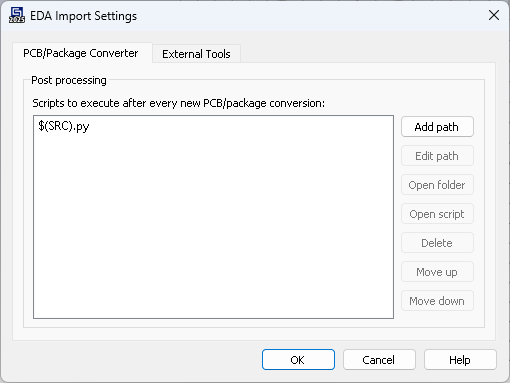

EDA import settings¶
CST Studio supports the import of various ECAD formats. Unfortunately, not all information needed/useful for simulation is conveyed in each data format. Using Python, the import can be extended to algorithmically enrich the imported data. The EDA Import Settings dialog contains settings for importing EDA files. All settings only affect new imports. Here you can define Python scripts to run during import for post-processing of the import data.
Accessing the dialog¶
There are three ways to access the “EDA Import Settings” dialog. One way is from a PCBS project. Navigate to “Home > Import/Export > EDA Settings…” as shown in the image below.

A similar approach is from a Microwave, EM or Mphysics Studio project. In one of these projects, navigate to “Modeling > Import/Export > 2D/EDA Files > EDA Import Settings…”. This can be seen in the image below.

The third option to open the dialog, is via the PCB import dialog. In the dialog, navigate to “Import > Settings…”. This is shown in the image below.

You can find more information on the EDA Import dialog here.
Each of these three options will open the EDA Import Settings dialog. It should look similar to the dialog in the image below.

Script configuration¶
In the EDA Import Settings dialog, you can add paths to scripts that should be run when importing a PCB. If multiple paths are set, they will be run in the configured order. Scripts can be referenced via an absolute path to run scripts from the local disk, or from network shares. It is possible to use (environment) variables like $(HOME) to construct paths. Scripts can also be referenced relative to the import source by using $(SRC). This variable contains the path to the ECAD source being imported.
The default configuration specifies to run a Python script $(SRC).py. When importing ECAD data from e:\data\example_pcb.xml, CST Studio will look for a file e:\data\example_pcb.xml.py. If such a file exists, it will be run during the import.
The configured script must define an entry point named “user_script”. The code below can be used as a template.
import cst.eda.pcb_api as pcb_api
def user_script(pcb, **kwargs):
pass
Example¶
We added the path to the script shown below to the Import Settings.
import cst.eda.pcb_api as pcb_api
import re
def user_script(pcb, **kwargs):
# Regular expression to match "1V", "3V", "3V3", ...
pattern = re.compile(r"\d+V")
# Iterate through all nets of the pcb and find matches in their names
for net in pcb.nets:
if pattern.match(net.name):
net.net_type = pcb_api.NetType.Power
This code has the same logic as a previous code. It searches the names of the PCB nets for a pattern. The net type of the nets with matching names is changed to “Power”.